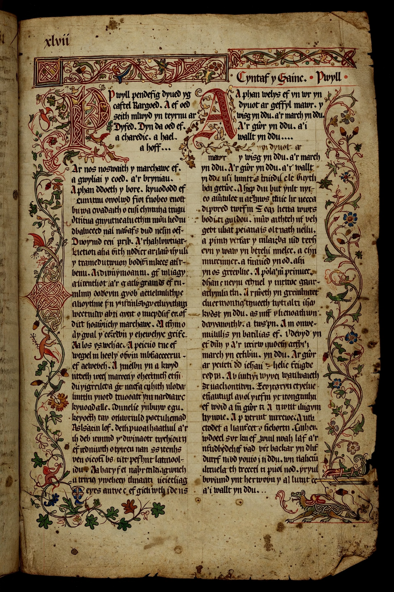

| Mabinogion | |
|---|---|
 The Red Book of Hergest, source of the tales | |
| Language | Middle Welsh |
| Date | Tales from 11th–13th centuries; manuscripts 14th–15th centuries |
| Sources | White Book of Rhydderch; Red Book of Hergest |
| Translator | Lady Charlotte Guest (1838–1849) |
The Mabinogion is a collection of eleven prose tales from medieval Welsh manuscripts, drawn from pre-Christian Celtic mythology, international folktale motifs and early medieval historical traditions. The stories were compiled in the 12th and 13th centuries from earlier oral tradition and survive principally in the White Book of Rhydderch (c. 1350) and the Red Book of Hergest (c. 1382–1410). The name is owed to Lady Charlotte Guest, whose English translation (1838–1849) popularised the collection; "Mabinogion" appears to derive from a scribal error for mabinogi, the term used for the Four Branches.
The heart of the collection is the Four Branches of the Mabinogi — Pwyll, Prince of Dyfed; Branwen, Daughter of Llŷr; Manawydan, Son of Llŷr; and Math, Son of Mathonwy — interlocking tales of the families of Pwyll and Llŷr involving enchantment, otherworldly encounters, and figures such as Rhiannon, Pryderi and the giants Bran and Branwen. The remaining tales include the native stories The Dream of Macsen Wledig, Lludd and Llefelys and Culhwch and Olwen — among the earliest Arthurian prose — and three Welsh romances (Owain, Peredur, Geraint and Enid) related to the romances of Chrétien de Troyes.
The Mabinogion is the foundation of Welsh literary tradition and a major source for the study of Celtic mythology. Its figures and motifs have influenced modern fantasy literature, and its translation by Guest played a key role in the 19th-century Welsh cultural revival.